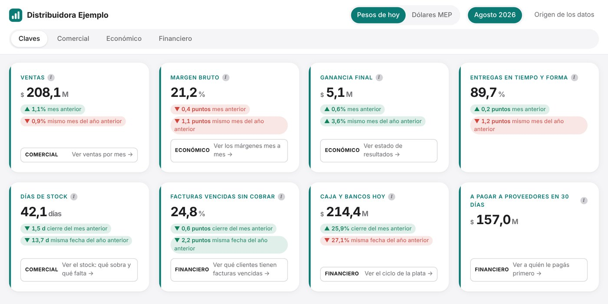

Del ERP al tablero: BI de punta a punta para una distribuidora pyme
Datos extraídos de un ERP real (webERP, 145 tablas), data warehouse en capas en PostgreSQL (Supabase), modelo dimensional, auditoría de calidad con 63 controles y un tablero con indicadores comerciales, económicos y financieros, en pesos de hoy o en dólares MEP.
